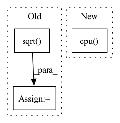

Pattern ID :37455

Before Change
width = img_shape[2]
mark_height = int(height * np.sqrt(self.mark_area_ratio))
mark_width = int(width * np.sqrt(self.mark_area_ratio))
// we only have 1 mark (trigger) and 1 mask
self.mark = torch.rand(img_shape)
self.mask = torch.zeros(img_shape)
// trigger locates in right bottom corner, change corresponding mask values
self.mask[height-mark_height:][:, width-mark_width:] = 1
// get average feature map from yt"s subset images
print("...extracting target feature map")
self.model.cuda()
_yt_inputs = self.yt_imgs[self.yt_sub_inds].cuda()
yt_featmaps = self.model.get_fm_before_outlayer(_yt_inputs) // on cuda
assert yt_featmaps.shape[0]==len(self.yt_sub_inds), \
"yt image num mismatch, check "latent_backdoor" attack-->"generate_trigger" function"
yt_avg_featmap = yt_featmaps.sum(0) / len(self.yt_sub_inds)
//------------------------- below is trigger generation process -------------------------//
print("...generating trigger")
// self.model.cuda()
self.mark = self.mark.cuda()
self.mask = self.mask.cuda()
yt_avg_featmap = yt_avg_featmap.cuda()
self.mark.requires_grad = True
if not self.poison_lr:
self.poison_lr = 0.01
optimizer = optim.Adam([self.mark], lr=self.poison_lr)
criterion = nn.MSELoss()
self.model.eval()
for epoch in range(self.poison_iteration):
optimizer.zero_grad()
l2_loss = 0.0
for ind in self.ynt_sub_inds:
ynt_img = self.ynt_imgs[ind].cuda()
ynt_img = ynt_img * (1-self.mask) + self.mask * torch.sigmoid(self.mark)
ynt_img = ynt_img.unsqueeze(0)
ynt_featmap = self.model.get_fm_before_outlayer(ynt_img)
l2_loss += criterion(ynt_featmap, yt_avg_featmap)
l2_loss = torch.div(l2_loss, len(self.ynt_sub_inds))
print("Epoch {} | MSE Loss {}".format(epoch, l2_loss))
l2_loss.backward(retain_graph=True)
optimizer.step()
self.model.cpu()
self.mark = self.mark.cpu()
self.mask = self.mask.cpu()
// now we generate an universal trigger (self.mark)
print("trigger generation done!\n")
After Change
// now we generate an universal trigger (self.mark)
print("trigger generation done!\n")
return yt_avg_featmap.cpu()
def student_fine_tuning(self, optimizer: torch.optim.Optimizer, lr_scheduler: torch.optim.lr_scheduler._LRScheduler, iteration: int = None, **kwargs):
In pattern: SUPERPATTERN
Frequency: 3
Non-data size: 3
Instances
Fragment ID: 107966494
Project Name: ain-soph/trojanzoo
Commit Name: f5575998452f70acd978e0f2297718a34a432e91
Time: 2020-06-28
Author: zxx5113@lrs-twang01.ist.psu.edu
File Name: trojanzoo/attack/backdoor/latent_backdoor.py
M Class Name: Latent_Backdoor
N Class Name: Latent_Backdoor
M Method Name: generate_trigger(1)
N Method Name: generate_trigger(1)
M Parent Class: BadNet
N Parent Class: BadNet
M File Name: trojanzoo/attack/backdoor/latent_backdoor.py
N File Name: trojanzoo/attack/backdoor/latent_backdoor.py
M Start Line: 177
M End Line: 231
N Start Line: 199
N End Line: 256
'>
Before Change
R_tgt_src = out["R"][0, -1, :2, :2]
t_st_in_t = out["t"][0, -1, :2, :]
error = tgt_p - (R_tgt_src @ src_p + t_st_in_t)
mah = torch.sqrt(torch.sum(error * error * torch.exp(out["match_weights"][-1]), dim=0).squeeze())
error2_sqrt = torch.sqrt(torch.sum(error * error, dim=0).squeeze())
plt.imshow(radar, cmap="gray")
plt.scatter(src[ids_cpu, 0], src[ids_cpu, 1], c=error2_sqrt[ids_cpu].detach().cpu().numpy(), s=5, zorder=2, cmap="rainbow")
After Change
scores = out["scores"][-1]
if scores.size(0) == 3:
scores = scores[1] + scores[2]
scores = scores.squeeze().detach().cpu().numpy()
plt.imshow(scores, cmap="inferno")
plt.colorbar()
plt.title("log det weight (weight score vis)")
'>
Fragment ID: 107966491
Project Name: utiasasrl/hero_radar_odometry
Commit Name: c1043c84c77f1a20b667d981d4cd286cb378c71a
Time: 2021-01-25
Author: david.yoon@robotics.utias.utoronto.ca
File Name: utils/vis.py
M Class Name: AnonimousClass
N Class Name: AnonimousClass
M Method Name: draw_batch_steam(3)
N Method Name: draw_batch_steam(3)
M Parent Class:
N Parent Class:
M File Name: utils/vis.py
N File Name: utils/vis.py
M Start Line: 55
M End Line: 134
N Start Line: 95
N End Line: 122
'>
Before Change
if self.obs_normalizer is not None:
mean, var = self.obs_normalizer.mean, self.obs_normalizer.var
observations = (observations - mean) / np.sqrt(var + 1e-8)
with torch.no_grad():
policy, _ = self.nn(torch.tensor(observations, dtype=torch.float32, device=self.device))
action, log_prob = self.distribution.sample(policy, deterministic)
if return_pi:
return action, policy
After Change
observations = [[observations]]
action, log_prob = self._act(observations, return_pi, deterministic)
if self.testing:
return action.cpu().numpy()[0, 0]
return action, log_prob
'>
Fragment ID: 107966490
Project Name: cherrypiesexy/imitation_learning
Commit Name: 60964599d67129e5dea6a4de74157227cae02efe
Time: 2020-09-06
Author: dmitry.akimov@giant.ai
File Name: algorithms/policy_gradient.py
M Class Name: AgentInference
N Class Name: AgentInference
M Method Name: act(4)
N Method Name: act(4)
M Parent Class:
N Parent Class:
M File Name: algorithms/policy_gradient.py
N File Name: algorithms/policy_gradient.py
M Start Line: 57
M End Line: 68
N Start Line: 62
N End Line: 67